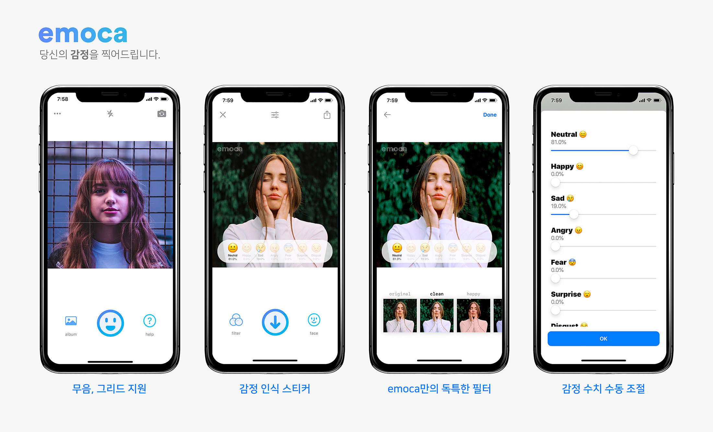
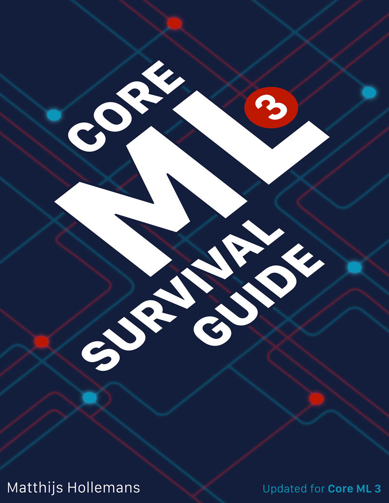
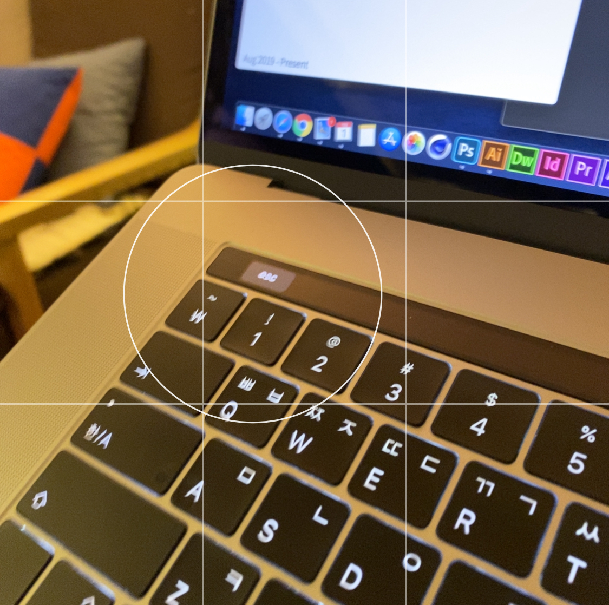
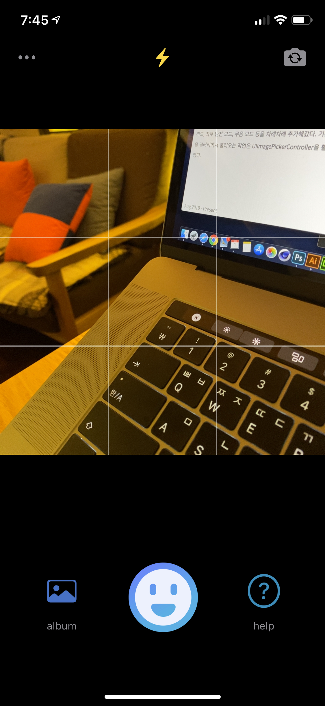
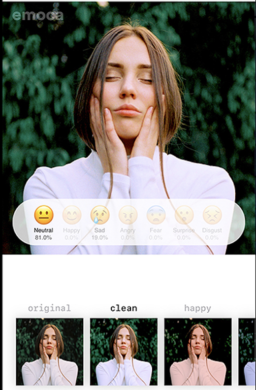
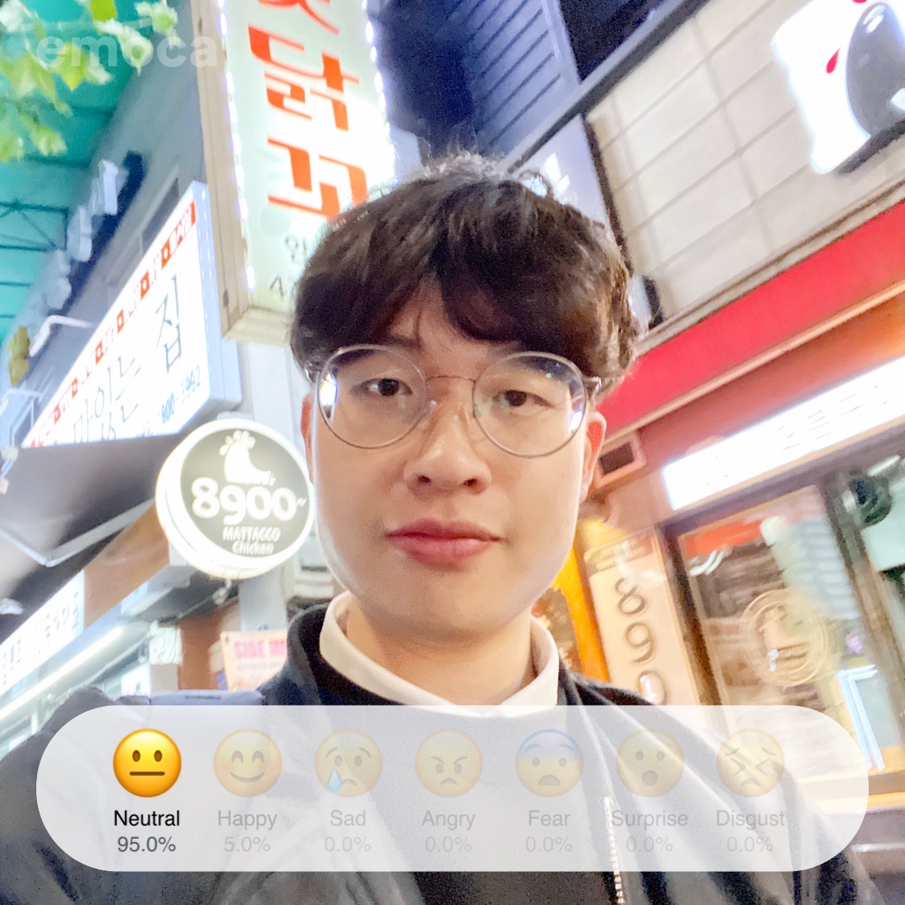

Project: emoca
https://apps.apple.com/kr/app/id1489574074

초보 개발자의 Core ML 카메라 앱 제작기
어느 날, 집 앞 서점에서 "실전! core ml을 활용한 머신러닝 ios 앱 개발"이란 책을 보았다. 그 책에는 객체 인식, 감정 탐지, 스타일 전이, 스케치 인식 등과 같은 최신 기술(?)로 무장한 예제들이 실려있었다. 개발 실력이 미숙한 필자는 이런 화려한 예제를 만드는 것을 꿈꾸며 책을 구매해버렸다.
▲ 나의 눈길을 사로잡았던 책의 예제들
책은 샀지만 머신러닝의 M도 몰랐던 나는 책을 몇 번이고 덮으며 한숨만 쉬었다. 초보 개발자에겐 너무 가혹한 예제가 많았고 책에는 당연하다는 듯 생략되어 있던 코드는 나에겐 당연하지 않았다. 더욱이 2019년 가을에 iOS 13이 배포되고 나서 작동되지 않는 코드가 꽤 있었다. 그도 그럴 것이, 한국에 번역된 건 2019년 4월이지만 원서가 출판된 때는 2018년 6월, 즉 1년도 넘은 내용이 담겨 있었기 때문이다. 안되는 코드를 몇 번이고 이유를 찾으며 고생을 했지만 해결을 할 수 없었다. 코드는 똑같은데 iOS 버전에 따라 결괏값이 달랐다.. 포기를 몇 번이고 생각하다가, 인터넷에서 "Core ML Survival Guide"라는 책을 보게 되었다.

▲ Core ML Survival Guide 책 표지
이 책에서 머신러닝에 대한 기초 개념을 알려주진 않지만, 애플의 Core ML에 대하여 매우 상세히 기술되어 있었다. 바로 구매를 하고 번역기를 열심히 돌려가며 정독을 했다. 그동안의 풀리지 않던 의문들이 하나둘씩 해결되며, '아 이런 것이었구나'를 그제서야 이해했다. 어느 정도 퍼즐이 맞춰질 즈음, 나는kaggle이란 곳에서 데이터 셋을 받아 mlmodel 파일로 컨버팅하는데 성공했다! 그제서야 나는 "감정 인식 카메라" 앱을 만들기로 다짐하고, xCode에서 새로운 프로젝트를 생성했다.
그런데.. 카메라는 어떻게 연동하지?
예제를 벗어나 빈 프로젝트에서 코드를 작성하려니 막막했다. AVFoundation라는 키워드로 다양한 글을 읽어보고, 뷰 컨트롤러에 카메라 화면을 힘들게 띄웠다. 이 과정에서 CVPixelBuffer를 처음 봤다. 카메라 화면을 띄운 기쁨도 잠시, '초점은 어떻게 맞추지..?'라는 생각과 함께 심각해졌다. 그냥 뷰만 띄운다고 밝기, 초점이 자동으로 조절되는 게 아니었다.. UIGestureRecognizer를 사용하여 사용자가 터치한 곳을 계산하고, AVCaptureDevice의 focusPointOfInterest를 사용하여 초점을 맞추었다. 이 과정에서 전면 카메라는 초점 기능이 없다는 것도 다시 깨달았다. 초점과 함께 밝기 조절을 마쳤는데, 사용자에게 초점을 맞추었다는 피드백을 주어야 했다. 어.. 어떡하지?
내가 선택한 것은 CAShapeLayer였다. 사용자가 탭을 하면 그 위치를 중심으로 원을 그리고 addSublayer로 표현했다. 이때, 원은 큰 원에서 작은 원으로 좁혀지며 투명해지는 애니메이션을 주었다. CABasicAnimation를 사용했으며 이 애니메이션이 사라지기 전에 사용자가 탭을 눌렀을 때 2개 이상의 원이 그려지는 것을 방지하기 위해 removeFromSuperlayer() 처리를 하는 것도 잊지 않았다.

▲ 탭을 하면 초점이 맞춰진다는 피드백을 준다.
머신러닝은커녕, 카메라 앱처럼 보이게 하는 데 꽤 시간이 걸렸다. 플래시, 그리드, 좌우 반전 모드, 무음 모드 등을 차례차례 추가해갔다. 기존에 찍은 사진을 갤러리에서 불러오는 작업은 UIImagePickerController을 활용하여 금방 했다. 아참, 물론 시스템 컬러를 사용하여 다크 모드도 지원하게끔 했다.

▲ 꽤 사진 앱처럼 생겼다
이제 머신러닝 처리를 해야 한다. 클래스를 새로 만들고, 잠시 한숨을 쉬며 찍히지도 않는 내 카메라 앱을 요리조리 돌려보며 '그래.. 여기까지 왔어!'를 마음속으로 외쳤다.
처음 내가 하고 싶었던 것은 책의 예제처럼 실시간으로 표정을 감지하는 앱이었다. 그런데.. 200MB나 되는 모델에 실시간으로 요청을 하기엔 내 핸드폰이 너무나 빨리 뜨거워졌다. 분명 할 수 있을 것 같은데, 내가 할 수 있을 것 같진 않았다. 합리화를 수 번 거친뒤, 실시간 처리는 결국 포기했다. 결국 사진을 찍고 나서 감정을 인식하는 방식으로 진행했는데, 그 과정은 아래와 같다.
사진 촬영 → VNDetectFaceRectanglesRequest을 이용하여 얼굴 인식 → Model에서 요구하는 이미지 크기, 여백 등을 고려하여 얼굴 이미지 가공 → Model에 전달 → 결괏값 활용
초보 개발자에겐 험난한 길이었다. UIImage만 써본 나에게는 CIImage, CGImage의 개념부터 살펴봐야 했다. 이 역시 구글에서 급하게 살펴보고, 이미지 가공 후 Model에 전달하여 결괏값을 받아오는 것까지 성공했다. 물론 이미지 가공 중 문제가 있는지, 정확도가 떨어진다(아직도 해결 못했다). 욕심이 생겨 필터 기능도 넣고 싶었다. 사실 카메라 앱의 꽃은 필터 아닌가? CIFilter에 대한 레퍼런스를 참고하여 필터 기능을 힘들게 넣었는데, 내 생각보다 레퍼런스가 별로 없었다. 내가 못 찾은건지, 다른 앱들이 CIFilter를 사용하지 않는 건지도 모르겠다. 멋진 필터를 많이 만들고 싶었으나 기본적인 필터 몇 가지만 제공하는 것으로 또 합리화했다.

▲ 스크롤 뷰에 9가지 필터를 넣었다.
앞에 서술했던 초첨이나 그리드 기능을 구현하기 위해 사용했던 CALayer를 활용하여 감정 수치를 스티커 형식으로 그리는 것도 무사히 마쳤다! 첫 계획과 (많이) 다르지만 꽤 사진 앱처럼 생겼다. 마지막으로 나는 나의 기술적 부족함으로 인한 감정 인식의 부정확도를 수동으로 감정을 조절하는 인터페이스를 추가하여 해결하고자 했다. 이 문제를 해결하고 나면 2020년이 될 것 같았기 때문에.. 급하게 앱을 마무리를 하고 싶어 NotificationCenter를 사용하여 대충 해결했다.

▲ 앱 배포를 마치니 그래도 얼굴이 폈다.
앱이 잘되면 물론 좋겠지만, 혼자서 겨우 만든 앱이 대박 날 거라는 생각은 하지 않는다. 그래도 내가 고생했던 기간동안 배운 지식들은 무척 도움이 되었으며, iOS 개발에 대한 이해도가 더욱 넓어졌다.
다음은 무슨 앱을 만들까?
2019년 12월 1일